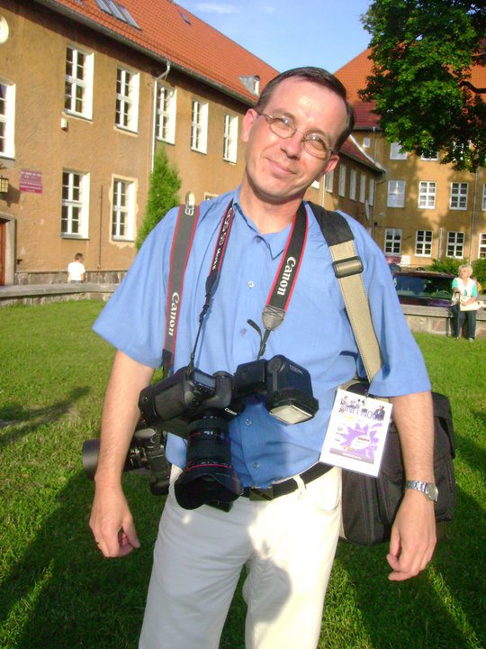

o mnie
Mam na imię Marek mieszkam w Szczytnie woj.: warmińsko - mazurskie. Wiele lat temu, kiedy jeszcze nikt nie myślał o fotografii cyfrowej zaczęła się moja przygoda z fotografią analogową oczywiście. Pierwszy znaleziony pod choinką aparat AMI niebawem zmienił się w Smienę. Później przyszedł czas na Zenita E - pierwszą lustrzankę zakupioną w latach 80' w komisie wraz z bratem za pierwsze zarobione pieniądze, by potem na długi czas stać się wiernym posiadaczem Zenita XP. Zdjęcia czarno-białe i barwne wywoływane w ciemni (zazwyczaj adoptowanego do tego celu pokoju czy też łazienki). Wielogodzinne wywoływanie zdjęć nie rzadko do wczesnych godzin rannych to już przeszłość. Obecnie posługuję się technologią cyfrową. Dysponuję wysokiej jakości sprzętem fotograficznym firmy Canon.

Czym jest dla mnie fotografia? Jest sposobem postrzegania świata i zapamiętywania go dla przyszłych pokoleń. Wielką pasją odkrytą dawno temu, która sprawia że każdy moment z aparatem w ręku jest wyjątkowy i niepowtarzalny. Fotografia to ludzkie emocje, to spotkanie z człowiekiem, przyrodą, ciekawe wydarzenie, spojrzenie na otaczający nas świat, obraz czy też chwila zatrzymana w kadrze. Chwila radosna i smutna, chwila kolorowa i czarno biała, widziana poprzez obiektyw malowana światłem. Fotografia to moja wielka miłość, radość, moje małe szczęście, które przypisuję mojemu wieloletniemu przyjacielowi obecnie mieszkającemu w Kanadzie. Który jak za dotknięciem zaczarowanej różdżki obdarował mnie fascynacją obrazem zarażając na długie, długie lata.
Każdego dnia na swojej drodze spotykam wielu wspaniałych i ciekawych ludzi. To właśnie dzięki nim nabieram sił, gromadzę pozytywną energię i mogę oddawać się swojej pasji, jaką jest fotografia. Satysfakcja, szczęście, przyjemność - to tylko niektóre z uczuć towarzyszących mi w codziennej pracy, którą zawsze wykonuję rzetelnie i z możliwie największym zaangażowaniem. Wykonuję zdjęcia o różnej tematyce, a efekty mojej pracy możecie zobaczyć właśnie tutaj.